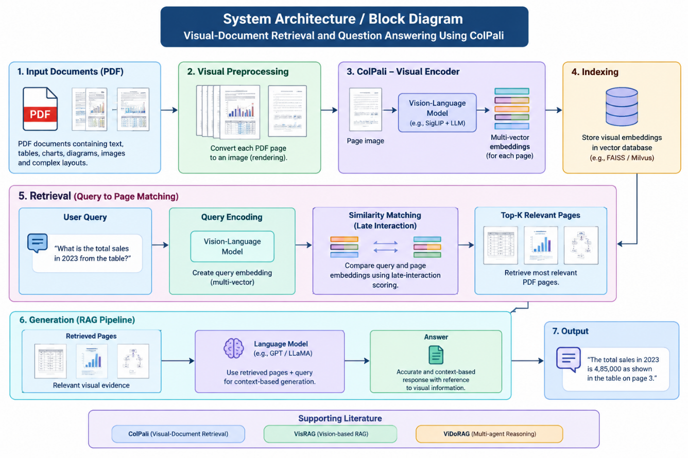
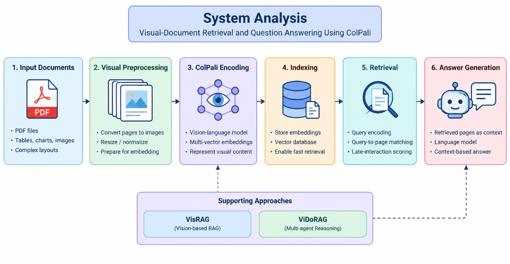

KJ's Educational Institute
TRINITY ACADEMY OF ENGINEERING, PUNE
DEPARTMENT OF INFORMATION TECHNOLOGY
Sr.No. 25 & 27, Kondhwa-Saswad Road, Bopdev Ghat, Pune 411 048
SAVITRIBAI PHULE PUNE UNIVERSITY, PUNE • ACADEMIC YEAR 2026–2027
A SYNOPSIS ON
(Under Project: “RAG for Intelligent Document Retrieval and Question Answering”)
Name of the Student:
Mr. Vijay Ramchandra Bhange
Roll No: 06
Internal Guide:
Prof. Gulnaz Thakur
Dept. of Information Technology
Technical Key Words
Visual-Document Retrieval
ColPali
Vision-Language Models
Retrieval-Augmented Generation (RAG)
Question Answering
Relevant Objectives
- To study visual-document retrieval using the ColPali model.
- To understand the use of multi-vector embeddings for representing PDF pages visually.
- To retrieve relevant document pages using query-to-page matching and late-interaction scoring.
- To study VisRAG and ViDoRAG as supporting approaches for visual-document retrieval and question answering.
- To evaluate retrieval relevance and the usefulness of visual evidence for answering questions involving tables, charts, diagrams, and complex layouts.
Introduction
Retrieval-Augmented Generation (RAG) is a technique that combines information retrieval with language generation to provide relevant and context-based answers to user queries. Traditional RAG systems mainly depend on extracting text from documents. However, PDF documents often contain important information in tables, charts, diagrams, images, and complex layouts. Text extraction may fail to preserve the complete meaning and structure of such information.
Visual-Document Retrieval is an approach that retrieves relevant document pages by analysing their visual content. ColPali is a vision-language-model-based retrieval method that represents PDF pages as images and creates visual embeddings for efficient retrieval. Instead of depending only on extracted text, it considers the visual information and layout of each page. It uses multi-vector representations and late-interaction scoring to match a user query with relevant document pages.
This seminar focuses on understanding ColPali and its role in visual-document retrieval and question answering. It also studies supporting approaches such as VisRAG and ViDoRAG, which explore the use of visual information and advanced retrieval workflows for multimodal documents. The retrieved pages can provide useful evidence to a separate language model for generating answers. This approach can help improve the retrieval of information from documents containing tables, charts, diagrams, and complex layouts.
Motivation
Traditional document retrieval systems may miss important information in tables, charts, diagrams, and complex PDF layouts. This motivates the study of ColPali, which uses visual representations to retrieve relevant document pages. The seminar also explores VisRAG and ViDoRAG to understand how visual retrieval can improve evidence retrieval for question answering.
Literature Review
1. RAG for Knowledge-Intensive NLP (Lewis et al., 2020)
Proposed the fundamental RAG framework combining neural retrieval with seq2seq generation for factual text generation.
2. ColPali: Document Retrieval with VLMs (Faysse et al., 2024)
Introduced multi-vector page image embeddings with late-interaction matching, preserving tables, figures, and layouts.
3. VisRAG: Vision-based RAG (Yu et al., 2024)
Uses document images directly in retrieval and answer generation, achieving a 20–40% performance gain over text pipelines.
4. ViDoRAG: Dynamic Iterative Reasoning Agents (Wang et al., 2025)
A multi-agent framework combining coarse-to-fine multimodal retrieval with iterative exploration and reflection agents.
System Architecture & Work Flow
The system converts PDF pages into images and uses ColPali to generate visual embeddings. These embeddings are indexed for efficient retrieval. When a user submits a query, the system matches it with relevant document pages using late-interaction scoring. The retrieved pages are then provided to a separate language model to generate a context-based answer. VisRAG and ViDoRAG serve as supporting literature.

Figure 1: System Architecture of Visual-Document Retrieval and Question Answering Using ColPali
System Analysis

Fig. 2: System Analysis (Input Documents → Visual Preprocessing → ColPali Encoding → Indexing → Retrieval → Answer Generation)
Problem Statement
Traditional text-based retrieval systems may fail to capture important visual information from PDF documents, such as tables, charts, diagrams, and complex layouts. Therefore, there is a need for a visual-document retrieval approach that can identify relevant document pages and provide useful evidence for accurate question answering.
Scope of Work
- To study visual-document retrieval using ColPali.
- To retrieve relevant PDF pages using visual embeddings and late-interaction scoring.
- To explore visual information from tables, charts, and complex layouts.
- To study VisRAG and ViDoRAG as supporting approaches.
- To understand how retrieved pages support context-based question answering.
Hardware Specifications
- Processor: Intel Core i3 or above
- RAM: Minimum 8 GB
- Storage: Minimum 256 GB HDD/SSD
- System Type: 64-bit computer
- Internet: Stable internet connection
Software Specifications
- Operating System: Windows 10/11 or Linux
- Programming Language: Python
- Deep Learning Framework: PyTorch
- Model: ColPali Vision-Language Model
- Libraries: Transformers, Pillow, PEFT
- Supporting Approaches: VisRAG and ViDoRAG
References
- M. Faysse et al., “ColPali: Efficient Document Retrieval with Vision Language Models,” arXiv:2407.01449, 2024.
- S. Yu et al., “VisRAG: Vision-based Retrieval-augmented Generation on Multi-modality Documents,” arXiv:2410.10594, 2024.
- Q. Wang et al., “ViDoRAG: Visual Document Retrieval-Augmented Generation via Dynamic Iterative Reasoning Agents,” arXiv:2502.18017, 2025.
- P. Lewis et al., “Retrieval-Augmented Generation for Knowledge-Intensive NLP Tasks,” NeurIPS, vol. 33, pp. 9459–9474, 2020.